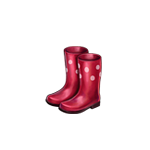
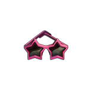
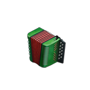
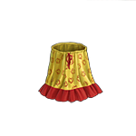
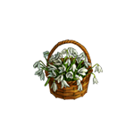

Получено: файл; исходный URL. Оригинальные байты, полученные по ссылке; идентичность архиву не подтверждена.

Весенняя коллекция
ВКонтакте; дата источника не указана- Тип
- Коллекции
- Версия и дата
- ВКонтакте; дата источника не указана
Элементы коллекции
















Данные по источнику · ВКонтакте · дата источника не указана
Предварительно: один источник; требует сверки. Требуется сверка.
- Награда
- Канаты и 400 опыта
- Где копать
- Валентинка, вождь, особняк, сторож, кладоискатель, фонтан, букет, цветочный декор, мост
- Состав (источник Zombie-island)
- Резиновые сапоги; Очки-звёздочки; Гармошка; Мини-юбка; Подснежники.
- Награда (источник Zombie-island)
- 1 Канаты; 400 Опыт.
- Где копать Весеннюю коллекцию в Зомби Ферме лопатами
- Сторож; Сторож с мозгами; Особняк; Вождь; Валентинка; Альпийский дом; Серьёзный коттедж; Дом знаний; Фонтан; Букет; Облако; Истукан; Истукан 2; Истукан 3; Слоник.
- Весенняя коллекция выпадает из ценностей и сокровищ
- Шоколадная; Карамелька; Сундук Мандарина; Сундук Чудовища 2; Сундук Чудовища 3; Букет роз; Букет тюльпанов; Букет мимоз; Грильяж; Дружеский подарок; Цирковой шатер; Весенний фонтан; Икебана.
- Весеннюю коллекцию могут найти Звездочеты
- Звездочет; Звездочет за зомбаксы.
- Весенняя коллекция попадается при колдовании Палочками
- Палочка-выручалочка.
- Весеннюю коллекцию можно привезти с Пиратских островов
- Пиратский сундук; Остров Сокровищ.
Данные по источнику · браузерная версия; платформа не указана · дата редакции не установлена
Предварительно: Содержимое списка: изображения и колонки могут терять смысл при извлечении текста; отдельная страница и дата не проверены. Подписи alt иногда ошибочны.. Требуется сверка.
- Текст карточки из каталога
- Канаты и 400 опыта Резиновые сапожки Очки-звёздочки Гармошка Мини-юбка Подснежники Где копать: Валентинка, Вождь, Особняк, Флаг Зенита, Сторож, Кладоискатель, Фонтан, Букет, цветочный декор,
Данные по источнику · Мой Мир (Mail.ru); историческая таблица · дата редакции не установлена
Предварительно: Источник сам использует знаки вопроса; не следует считать такие места подтверждёнными. Возможны изменения патча и платформы; независимость от других справочников не доказана.. Требуется сверка.
- Название в источнике
- Весенняя коллекция
- Где копать
- Валентинка, Вождь, Сторож, Кладоискатель, Фонтан,
- Награда
- Канаты и 400 опыта
Данные по источнику · браузерная версия; на сайте указана игра ВКонтакте · дата редакции не установлена
Предварительно: Исторический текст; сильно совпадает со справкой Zommbie.at.ua, независимость не доказана. Отрицания и доступность могут измениться с патчем.. Требуется сверка.
- Где искать по странице «Зомбастики»
- Валентинка, особняк, вождь, сторож, букет, фонтан.
Данные по источнику · Мой Мир Mail.ru, историческая редакция, дата неизвестна · дата редакции не указана
Предварительно: Исторический фанатский источник, условия могут различаться между версиями и редакциями.. Требуется сверка.
- Где копать по совету
- Валентинка, Вождь, Сторож, Кладоискатель, Фонтан. Историческая информация, вероятности не указаны.
Данные по источнику · историческая браузерная версия, платформа не указана · 10.01.2014 — дата в каталоге; дата редакции материала неизвестна
Предварительно: Фанатский список без вероятностей и уточнения площадки; независимость от других источников не установлена.. Требуется сверка.
- Где искать по списку сайта
- Валентинка, особняк, вождь, сторож, букет, фонтан
- Оговорка
- Список может относиться к разным условиям, инструментам и периодам игры; не доказывает гарантированное выпадение. Заявления «только» и «невозможно» относятся лишь к времени и версии источника.
Связанные сущности
нет проверенных связей — требуется сверка.
Источники
- прочитано; проверка 2026-11-21
- прочитано: Zombie-island.moy.su; проверка 2026-11-21
- ZOMBIA: прочитана карточка в списке
- Ссылка на отдельную страницу; отдельно не проверена
- Zombiemail: строка таблицы коллекций; Мой Мир
- Зомбастики: прочитана соответствующая строка; возможная копия другого справочника
- Прочитанная страница
- zommbie.at.ua: где искать коллекции